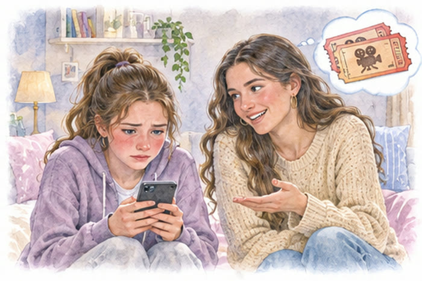

Listen to the text
Speed:

Kateryna is talking to her older sister Yuliia. She looks worried. Kateryna: Yuliia, I need your help. Roman from my class asked me to go to the cinema on Saturday. Yuliia: And? That is nice. Kateryna: But is it a date? Or is he just being friendly? I don't know what to think! Yuliia: What exactly did he say? Kateryna: He said, "Hey, dude, there is a new film on Saturday. Do you want to go?" Yuliia: He called you "dude"? Hmm. That doesn't sound very romantic. Kateryna: He calls everybody "dude". Even the Maths teacher. Once. Yuliia: Is anybody else going? Kateryna: I don't know! I was so surprised that I said, "I will call you back." And I ran away. Yuliia: You ran away? Oh, Katia. Kateryna: What should I do now? Yuliia: It is simple. Call him back and ask, "Who else is coming?" If he says "the whole class", it is not a date. If he says "just us", then perhaps it is. Kateryna: And if it is? Yuliia: Then you go to the cinema, watch the film and eat popcorn. That is all. You don't have to decide your whole life on Saturday. You are fourteen. Kateryna: OK. I am calling. Don't listen! Two minutes later Kateryna comes back. Her face is red. Yuliia: Well? Kateryna: He said, "Just us. And my little brother, because my mum is working. Sorry." Yuliia: So you are having a date with a babysitter. Kateryna: It is the most romantic thing that I have ever heard.
Tap any sentence to hear it again.
Сподобалось? На сайті ще більше матеріалів для вчителів!
Reader, презентації, ігри, діагностичні та контрольні роботи до підручників 1-11 класів.
Перейти на сайт materials.allaenglish.com